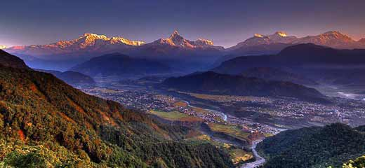
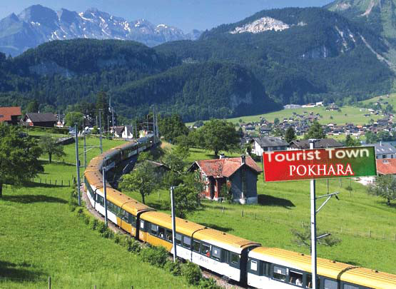

Pokhara is in the northwestern corner of the Pokhara Valley,[6] which is a widening of the Seti Gandaki valley that lies in the midland region (Pahad) of the Himalayas. In this region the mountains rise very quickly[7] and within 30 km, the elevation rises from 1,000 m to over 7,500 m. As a result of this sharp rise in altitude the area of Pokhara has one of the highest precipitation rates in the country (3,350 mm/year or 131 inches/year in the valley to 5600 mm/year or 222 inches/year in Lumle).[8] Even within the city there is a noticeable difference in rainfall between the south and the north of the city, the northern part of the city situated at the foothills of the mountains experiences proportionally higher amount of precipitation. The Seti Gandaki is the main river flowing through the city.[9] The Seti Gandaki (White River) and its tributaries have created several gorges and canyons in and around the whole city which gives intriguingly long sections of terrace features to the city and surrounding areas. These long sections of terraces are interrupted by gorges which are hundreds of meters deep.[10] The Seti gorge runs through the whole city from north to south and then west to east and at places these gorges are only a few metres wide. In the north and south, the canyons are wider.[11] In the south the city borders on Phewa Tal (4.4 km2) at an elevation of about 827 m above sea level, and Lumle at 1,740 m in the north of the city touches the base of the Annapurna mountain range. Pokhara, the city of lakes, is the second largest city of Nepal after Kathmandu. 3 eight-thousand meter tall peaks (Dhaulagiri, Annapurna, Manaslu) can be seen from the city.[12] The Machhapuchhre (Fishtail) with an elevation of 6,993 m is the closest to the city.[13] The porous underground of the Pokhara valley favours the formation of caves and several caves can be found within the city limits. In the south of the city, a tributary of the Seti flowing out of the Phewa Lake disappears at Patale Chhango (पाताले छाँगो, Nepali for Hell's Falls, also called Davis Falls, after someone who supposedly fell into the falls) into an underground gorge, to reappear 500 metres further south.[14][15] To the south-east of Pokhara city is the municipality of Lekhnath, a recently established town in the Pokhara valley, home to Begnas Lake.[16]
Pokhara lies on an important old trading route between China and India. In the 17th century it was part of the Kingdom of Kaski which was one of the Chaubise Rajya (24 Kingdoms of Nepal, चौबिसे राज्य) ruled by a branch of the Shah Dynasty.[20] Many of the hills around Pokhara still have medieval ruins from this time. In 1786 Prithvi Narayan Shah added Pokhara into his kingdom. It had by then become an important trading place on the routes from Kathmandu to Jumla and from India to Tibet.[21] Pokhara was envisioned as a commercial center by the King of Kaski in the mid 18th century A.D.[22] when Newars of Bhaktapur migrated to Pokhara, upon being invited by the king, and settled near main business locations such as Bindhyabasini temple, Nalakomukh and Bhairab Tole. Most of the Pokhara, at the time, was largely inhabited by Khas[23] (Brahmin, Chhetri, Thakuri and Dalits), the major communities were located in Parsyang, Malepatan, Pardi and Harichowk areas of modern Pokhara and the Majhi community near the Phewa Lake.[24] The establishment of a British recruitment camp brought larger Magar and Gurung communities to Pokhara.[25] At present the Khas, Gurung (Tamu) and Magar form the dominant community of Pokhara. There is also a sizeable Newari population in the city.[26] A small Muslim community is located on eastern fringes of Pokhara generally called Miya Patan. Batulechaur in the far north of Pokhara is home to the Gandharvas or Gaaineys (the tribe of the musicians).[27] The nearby hill villages around Pokhara are a mixed community of Khas and Gurung.[28] Small Magar communities are also present mostly in the southern outlying hills. Newar community is almost non-existent in the villages of outlying hills outside the Pokhara city limits. From 1959 to 1962 approximately 300,000 exiles entered Nepal from neighbouring Tibet following its annexation by China. Most of the Tibetan exiles then sought asylum in Dharamshala and other Tibetan exile communities in India. According to UNHCR, since 1989, approximately 2500 Tibetans cross the border into Nepal each year,[29] many of whom arrive in Pokhara typically as a transit to Tibetan exile communities in India. About 50,000 - 60,000 Tibetan exiles reside in Nepal, and approximately 20,000 of the exiled Tibetans live in one of the 12 consolidated camps, 8 in Kathmandu and 4 in and around Pokhara. The four Tibetan settlements in Pokhara are Jampaling, Paljorling, Tashi Ling, and Tashi Palkhel. These camps have evolved into well built settlements, each with a gompa (Buddhist monastery), chorten and its particular architecture, and Tibetans have become a visible minority in the city.[30] Until the end of the 1960s the town was only accessible by foot and it was considered even more a mystical place than Kathmandu. The first road was completed in 1968 (Siddhartha Highway)[31] after which tourism set in and the city grew rapidly.[32] The area along the Phewa lake, called Lake Side, has developed into one of the major tourism hubs of Nepal.[33]
